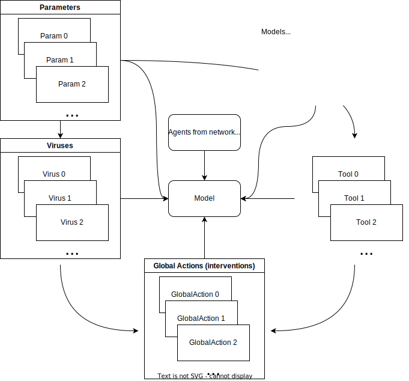

[1] add_param add_tool
[3] add_virus agents_from_edgelist
[5] agents_smallworld get_agents
[7] get_hist_tool get_hist_total
[9] get_hist_transition_matrix get_hist_virus
[11] get_n_replicates get_n_tools
[13] get_n_viruses get_name
[15] get_ndays get_param
[17] get_reproductive_number get_states
[19] get_today_total get_transition_probability
[21] get_transmissions print
[23] queuing_off queuing_on
[25] run_multiple run
[27] set_name set_param
[29] size summary
[31] today verbose_off
[33] verbose_on
see '?methods' for accessing help and source codePart 1: Basic Modeling
Overview of epiworldR

epiworldRAs shown in the above diagram, the core component of an epiworldR simulation is the model object. Models can have an arbitrary number of parameters, viruses, tools, and global events, depending on what the user wants to simulate. Pre-built models in epiworldR (e.g., ModelSIR, ModelSEIR, ModelDiffNet) typically initialize with a single virus and a few other parameters, such as the population size. All epiworldR models inherit the “epiworld_model” class, which gives them access to the following functions:
In this part of the workshop, we’ll use several of those functions as we walk through a basic modeling example for monkeypox.
Example Scenario: Monkeypox Outbreak
The example implements the following scenario:
- Disease: Monkeypox
- Population size: 50,000 agents
- Initial Disease Prevalence: 0.0001 (5 agents start the simulation exposed to the virus)
- Contact Rate: 4 (each agent will contact 4 others during each model step/day)
- Incubation Days: 7 (how long after infection before symptoms appear)
- Transmission Rate: 0.5 (the probability an infected agent infects another agent)
- Recovery Rate: \(\frac{1}{7}\) (infected agents take 7 days to recover)
Set up the Model
Create the model with the above characteristics using the ModelSEIRCONN() function.
Run the Model
Execute the model using the run() function, passing the model object, the number of simulation days (in this case, 100 days), and an optional seed for reproducibility. Use the verbose_off() function before running the model to suppress output generated by hte run() function.
Connected vs Non-Connected Models
This example uses a SEIR connected model (ModelSEIRCONN()), meaning that all agents in the model are connected with each other. Non-connected models (e.g., ModelSEIR(), ModelSIR()) don’t assume all agents are connected, thus a network of agents must be built using the agents_smallworld() function before running the model where:
- n = number of agents
- k = number of ties in the small world network
- d = whether the graph is directed or not
- p = probability of rewiring
________________________________________________________________________________
Susceptible-Exposed-Infected-Removed (SEIR) (connected)
It features 50000 agents, 1 virus(es), and 0 tool(s).
The model has 4 states.
The final distribution is: 0 Susceptible, 1 Exposed, 8 Infected, and 49991 Recovered.After running the model, printing it gives the final distribution of agents across the four SEIR states. If we want to re-run the model for a different duraction, epiworldR allows us to do this without re-initializing the model.
________________________________________________________________________________
Susceptible-Exposed-Infected-Removed (SEIR) (connected)
It features 50000 agents, 1 virus(es), and 0 tool(s).
The model has 4 states.
The final distribution is: 0 Susceptible, 474 Exposed, 2263 Infected, and 47263 Recovered.Model Summary
For more detailed output than the simple print, use the summary() function:
________________________________________________________________________________
________________________________________________________________________________
SIMULATION STUDY
Name of the model : Susceptible-Exposed-Infected-Removed (SEIR) (connected)
Population size : 50000
Agents' data : (none)
Number of entities : 0
Days (duration) : 60 (of 60)
Number of viruses : 1
Last run elapsed t : 101.00ms
Total elapsed t : 209.00ms (2 runs)
Last run speed : 29.56 million agents x day / second
Average run speed : 28.68 million agents x day / second
Rewiring : off
Global events:
- Update infected individuals (runs daily)
Virus(es):
- Monkeypox
Tool(s):
(none)
Model parameters:
- Avg. Incubation days : 7.0000
- Contact rate : 4.0000
- Prob. Recovery : 0.1429
- Prob. Transmission : 0.5000
Distribution of the population at time 60:
- (0) Susceptible : 49995 -> 0
- (1) Exposed : 5 -> 474
- (2) Infected : 0 -> 2263
- (3) Recovered : 0 -> 47263
Transition Probabilities:
- Susceptible 0.82 0.18 0.00 0.00
- Exposed 0.00 0.86 0.14 0.00
- Infected 0.00 0.00 0.87 0.13
- Recovered 0.00 0.00 0.00 1.00The summary() function provides a lot more information on the model:
- Summary of the simulation itself, giving details on the size of the model, the number of entities (think of these are public spaces in which agents can make contact with one another, we’ll cover them later), the elapsed time for the simulation, etc.
- List of global events. The model automatically includes an event to update infected individuals, which runs on each day of the model. During this event, infected agents contact other agents (with a chance to infect them) and/or recover from the disease. Users can define additional events and specify when they run (e.g., daily, weekly, once after 20 days, when the number of infected agents crosses a certain threshold, etc.).
- Lists of viruses and tools. Our example has 1 virus and 0 tools, but
epiworldRmodels can have any number of viruses and tools. - List of model parameters given at initialization.
- Initial and final distribution of agents across SEIR states.
- Transition Probabilities Matrix, which shows the probability of an agent in one state moving to a different state at a given step of the model. Notice that there is a probability of 0.0 to skip states. In other words, an agent cannot move from Susceptible directly to Recovered; that agent must pass through the Infected state before progressing to Recovered. The same logic applies in the reverse direction; an agent cannot become Susceptible again after being Infected.
Take some time to familiarize yourself with this output.
Model Visualization

The plot() function plots the number of agents in each of the four SEIR states over the course of the model simulation. You can get this data in tabular form with the get_hist_total() function:
Reproductive Number
An important statistic in epidemiological models is the reproductive number. We get this from an epiworldR model using the get_reproductive_number() funcion.
virus_id virus source source_exposure_date rt
1 0 Monkeypox 13873 48 0
2 0 Monkeypox 2890 48 0
3 0 Monkeypox 47514 46 0
4 0 Monkeypox 34129 46 0
5 0 Monkeypox 48375 45 0
6 0 Monkeypox 31698 45 0TODO: Explanation of this output. Does every agent have an rt?
Plot the reproductive number using:
This function takes the average of values in the above table for each date and repeats until all dates have been accounted for. For example, on average, individuals who acquired the virus on the 10th day transmit the virus to roughly 10 other individuals.
Exercise 1
Create a SEIR model using the ModelSEIR() function (not ModelSEIRCONN()) to simulate a COVID-19 outbreak for 100 days in a population with:
- Population size: 10,000 agents
- Initial Disease Prevalence: 0.01
- Incubation Days: 4
- Transmission Rate: 0.9
- Recovery Rate: \(\frac{1}{4}\)
Then plot the model parameters to analyze changes in counts over time. When running the model, set seed = 1912.
Since ModelSEIR is not connected, you will need to add a smallworld population using the agents_smallworld() function after initializing the model, using:
- n = 10000
- k = 5
- d = FALSE
- p = .01
From there, run the model and visualize.
After how many days does the number of infections peak in this simulation? How many infections occur at the peak?
Exercise 2
Plot the reproductive number of the COVID-19 simulated SEIR model over 100 days.